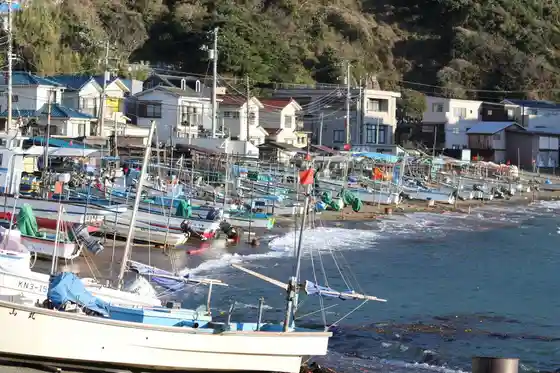
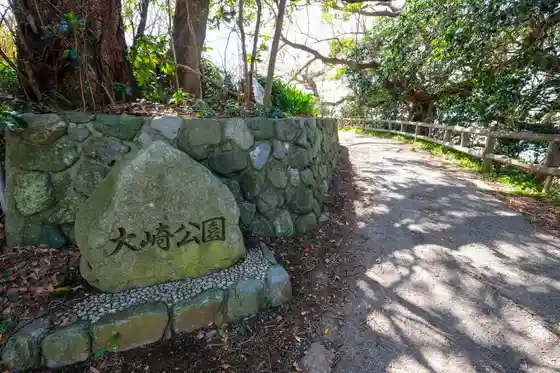
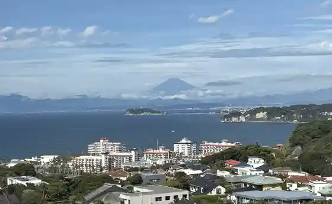
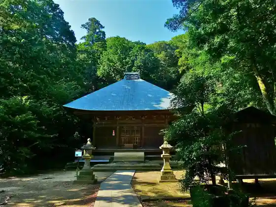

Kotsubo Fishing Port Ryoshi Takushii
Zushi, Kanagawa · 046-873-1111 · Official / source link

Osaki Park
Zushi, Kanagawa · 046-873-1111 · Official / source link

Zushi Beach
Zushi, Kanagawa · 046-873-1111 · Official / source link
Hiro Yama Park
Zushi, Kanagawa · 046-871-4941 · Official / source link

Jinmu Tera
Zushi, Kanagawa · 046-871-4565 · Official / source link

OCEANS.Club
Zushi, Kanagawa · 046-872-8911 · Official / source link
Furaifiirudo Zushi Coast
Zushi, Kanagawa · 090-1617-583 · Official / source link
Mandara Do Yagura Gun
Zushi, Kanagawa · 046-872-8153 · Official / source link
Iwadono Tera
Zushi, Kanagawa · 046-871-2268 · Official / source link
Taka Yo Tera (Namiko Fudo)
Zushi, Kanagawa · Official / source link
Zushi Coast Taiyo no Kisetsu Kinenhi
Zushi, Kanagawa · 046-873-1111 · Official / source link
Roka Memorial Park
Zushi, Kanagawa · 046-873-1111 · Official / source link
Fujiya Gyuniku Mise
Zushi, Kanagawa · 046-871-2444 · Official / source link
Nagae Sakurayama Kofun Gun
Zushi, Kanagawa · 046-873-1111 · Official / source link
EVER RESORT
Zushi, Kanagawa · 046-876-5710 · Official / source link
Shonan no Chiisa Na Atorie Nature Living
Zushi, Kanagawa · Official / source link
SUNDOWNER Tokyo Omuretsu
Zushi, Kanagawa · 050-3066-6044 · Official / source link
CINEMA AMIGO
Zushi, Kanagawa · 046-873-5643 · Official / source link
CREMAHOP Zushi Mise
Zushi, Kanagawa · Official / source link